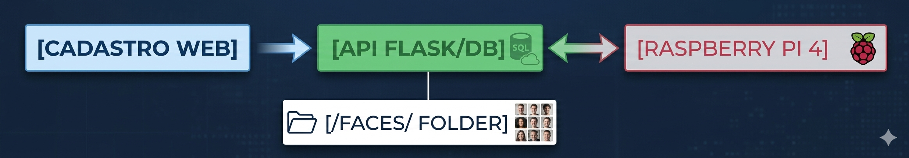

Situação de Aprendizagem - Controle de Acesso Inteligente
Uma empresa de tecnologia precisa modernizar o acesso ao seu laboratório principal. O objetivo é eliminar chaves físicas e cartões, utilizando Reconhecimento Facial para autenticação de entrada.
Requisitos, modelagem de dados e desenho da arquitetura.
Criação da interface Web e salvamento das fotos no servidor.
Raspberry Pi conectando ao servidor e capturando imagens de teste.
Implementação do script de IA para comparação facial e validação final.

Fluxo: O cadastro salva a imagem -> A Raspberry consulta via rede -> O script de IA faz a comparação localmente.